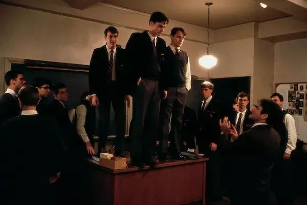
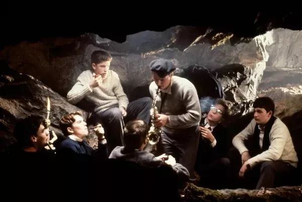
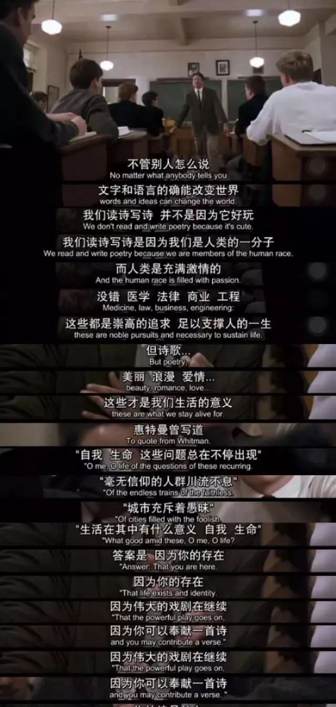

Brief Intro
《死亡诗社》（英语：Dead Poets Society）是1989年彼得·威尔导演的电影。本片讲述一间传统学校的老师用反传统的方法来教学生们诗歌、文学、生活的故事。电影不仅是主演罗宾·威廉斯的经典之作，同时也是一部讲述师生关系的优秀电影。
Fall
不知道怎么忘记了英语课的课程安排，下午走进教室看到下一部电影是《死亡诗社》的时候竟然有一丝错愕。上一次看这电影已经是好几年前，当时的触动感也已经很陌生了。开始之前，老师说这部电影她已经看过很多遍，但每一遍看，还是会跟着笑跟着哭，我已经回想不起几年前的情况，不过今天的杜同学，的确也跟着哭哭笑笑了一场。

再看到那些不可能忘记的画面——撕教材，上讲桌，深夜前往印第安山洞，我还是觉得新鲜而振奋，只可惜所有激动和喜悦，都因为预知了悲剧结局而变得短暂。Todd在讲台上被老师“逼着”念出自己斟酌了不知道多久才大概敲定的诗，这一段简直该被载入影史，那么饱满的情绪，饱满到再冷静的观众都会惊奇地发现自己竟然如此投入地担心Todd念不出来，又在一切结束后长舒一口大气。Mr. Keating 有意识地略去了教材里所有的现实主义内容，只留下他觉得这些孩子们稀缺的romanticism，然而他的孩子们，哪怕真的拥有了他想看到的东西，也只能把它遮掩埋藏在现实的漩涡里，严重一点说，他们是没有资格接受这些的人。

之所以说他们没有资格，是因为他们的枷锁没人能解。精英阶层本来就是对社会规则适应得最好的一批人，Mr. Keating要给他们的却恰好和他们掌握得最好的东西相矛盾，不难想象这些年轻人们在面对这样的矛盾时要经历多激烈的心理斗争。这些孩子出生在工程师，医生，银行家和律师的家庭，他们从小被教育要务实，要自律，要守规矩，而他们无疑做得非常好。他们的家庭所代表的精英社会早就为他们指明了保持精英素质的标准道路，这条道路和“Seize The Day”是不相容的。电影很明确地指出了理想主义的弱势，即使所有人都知道Neil的死根本不是Mr. Keating造成的，但现实是由他们的学校和家庭来决定的，甚至连他们自己也都挨个签下了名字，理想和现实对立的战况里，胜负是了然的。
但电影的伟大之处在于，对于“既然胜负了然，是否就没有必要挣扎”这个问题，它给出的答案是，生活的意义恰巧在于那不能取胜的理想主义。不管是从Mr. Keating的言传身教中，还是从学生们明知无力还要尽力一试的态度中，电影都在传达这样的主题，它用自己的方式解释着为什么诗歌不可或缺，为什么健全的人格不应该停止对生活美学的追求。

Neil的死当然令人扼腕，但我们通过他的死还能看到现实主义的固执、残忍和愚昧；看到强迫性的、命令性的教育是如何摧毁了一个个鲜活有力的生命；看到这些精致到可怖的利己主义者是如何把自己的空洞和丑恶也强加到年轻人身上去。Neil是一个很美好的形象，他一边懂事得令人心疼，一边满腔热忱地追求“诗歌、理想、爱和自由”。学校里所有人的精神世界都在夹缝中苟且偷生，但只有像Neil这样的孩子会不满于此，他对现实的妥协是有限度的，相反，有些人是没有底线的。但同时，没有底线的人不会痛苦，而无时无刻面临着理想和现实的抉择的思索者，才会痛苦。这里的理想，不是肤浅地停留在“我想做什么”上，还包含着对“不加思考不求意义地追求现实物质”的鄙视，对空洞和无趣的严憎，对教育专制的反抗和对爱、对美好的追求，对丰满的精神世界的追求。
我过去没有足够的生活体验支撑自己对这部电影产生深刻的共鸣，而现在我越发能感觉到像Neil一样的自己在慢慢死去。我的理想主义，也在和现实的对立里毫无悬念地一场场地败下阵来，更可悲的是我甚至越来越不易察觉到这些胜负，对生活越来越麻木。我想死去也未察觉的人远不止我一个，而他们可能甚至没有机会从别人的故事里对自己的可悲窥见一二吧。
More
欢迎关注公众号：候场杂记，分享我们的不定期"影评"